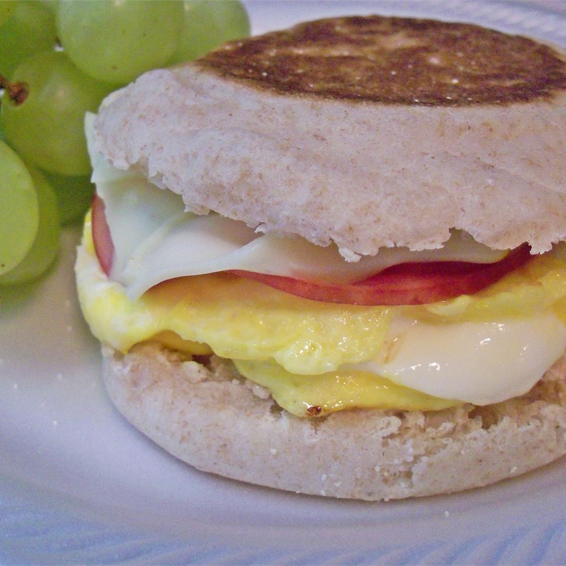

Egg Muffin

Description
Mom, can we have McDonald's?
Now you can say we have McDonald's breakfast at home!
This healthy breakfast sandwhich is made to immitate
the classic egg mcmuffin sandwhich and is easy to prepare
at home! No toy included
Ingredients
- 1 pacakage of english muffins
- 6 eggs
- 1/4 cup chopped green onions
- 1 cup shredded Cheddar cheese
- 2 1/2 tablespoons vegetable oil
- 6 ounces ground breakfast sausage
Directions
- Split the muffins open with a fork and
toast them in a toaster oven.
- In a large bowl scramble the eggs, green
onions and cheddar cheese together. Heat v
egetable oil in a skillet, pour the egg mixture
into the skillet and let it fry in one layer as
you would an omelet. When the egg is cooked on
the underside, flip the egg over and cook the
wet side; remove from heat when cooked through.
- At the same time that the eggs are frying, form
the sausage into small patties. Place the sausage
in another skillet. Fry until browned, remove from
pan and drain on paper towels.
- Make the muffin sandwiches by layering a piece of
sausage and a piece of the fried egg between the
two muffin pieces. If you intend to freeze the
sandwiches, let each part of the sandwich cool before
make the sandwiches, then wrap them in plastic wrap
and freeze. Reheat in the microwave.